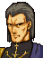
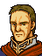

Narration
ドリアスたちにおくれること一日
ようやく準備を終えたリーフたちは
アルスターへの進撃を、今、まさに
開始しようとしていた
そのとき、先発したドリアス隊から
思いがけない報告がもたらされる
それは、リーフたちがたどることになる
苦難の道の始まりを告げるものであった
Opening 1

アウグスト、全員そろったようだな
ではアルスターに出陣するぞ

王子、城へ何者かがまいりました
おそらく
ドリアス卿の手のものかと・・・

リーフ王子！
・・・無念です・・・
どうしたんだ？
なにがあった？
帝国軍の反撃を受け
わが部隊は・・・全滅・・・
なんだと！
ドリアスはどこだ？
卿はどこにいる？
ドリアス卿は・・・
われらの退却を助けるため・・・
自ら敵軍にきりこまれて・・・
む、無念の・・・ご最期を・・・
！！
・・・・・・
われらの力が足りないばかりに・・・
申し訳ございません！
ばかな・・・そんなことが・・・
王子、味方が退却してきますぞ
急がねば全滅をまぬがれません
彼らを援護・・・
・・・ばかな・・・そんな・・・
王子！ しっかりなされい！
このまま味方を全滅させては
ドリアス卿の犠牲がムダになりますぞ！
可能な限り、兵を救出するのです！
Opening 2

・・・うじむしどもめ
わが帝国の力を思い知ったか！
ウォルフ、後は卿にまかす
フリージ家の名にかけて
必ずレンスターを奪還せよ！

はっ、必ずや！！
Opening 3
Only if you did not defeat Conomor in Chapter 16A

多くの市民が死んだ・・・
だが、この私があるかぎり
アルスターは滅亡させぬ・・・
Opening 4
Only if you did not defeat Amalda in Chapter 17B

私には部下の命を守る義務がある
だが
本当にこれでいいのだろうか・・・
スルーフ様、教えてください
私はどうすればよいのでしょうか・・・
Talk: Miranda → Conomor

コノモール
もうおやめなさい！
ミランダ姫！？
どうしてこのようなところに！
リーフ王子に救われたのです
彼は、私のもとめに応じて
アルスターを救おうとしました
そのために多くの兵と
大事な側近まで失いました
それなのに
あなたは何をしているの！
精鋭のアルスター軍をもっていながら
帝国の飼い犬になりさがって
いったい何を考えているのです！
はっ・・・
申し訳有りません・・・
敵はレンスターではないわ
帝国こそ、私たちの憎い敵
指揮下の騎士団に命じなさい
レンスター軍の退却を助けるの！
今よりアルスターは国をあげて
リーフ王子の北トラキア解放軍に
参加するのです！
わかりました
では、ただちに
アルスター全軍に告ぐ！
今よりわれらは解放軍に参加する
騎士団は全力をもって
レンスター軍を助けよ！
われらはレンスターに亡命し
祖国アルスターの
奪回をめざすであろう
なおこれは
王女ミランダ姫のご命令である！
Talk: Sleuf → Amalda

アマルダ様
剣を引いてください
私です、スルーフです
スルーフ司祭
どうしてこんなところへ？
あなたを迎えにきたのです
リーフ王子の解放軍が
あなたをお待ちしています
私に国を裏切れと？
スルーフ様、それは無理です
それができるくらいなら
こんなに苦しみはいたしません
アマルダ様
国とは王や貴族の私物ではないはずだ
もしまちがった方向にあるときは
それを正すことも騎士の努めでしょう
裏切り者の汚名を恐れて
あなたは
国の過ちを見すごすおつもりですか
そうではありませんが・・・
ただ、私の部下たちが
どうなるかと思うと・・・
それは彼らが決めること
あなたは
ご自分の心に素直であるべきだ
わかりました・・・
スルーフ様
私は解放軍とともに戦います
うばわれた子供たちを取り戻す！
それこそが、私の望みです！！
House left side, 1st from the top
.png)
レンスター軍が負けたって本当ですか？
また帝国の時代に
戻ってしまうのでしょうか・・・
え、そんなことはさせない？
たのもしいわ
このせいすい
さしあげますから
役に立ててくださいな
House left side, 2nd from the top
.png)
このあたりも
また、戦場になるのかねえ
おお、いやだいやだ
あんたたちレンスター軍の人だろ
このぎんの剣あげるからさ
なんとかしておくれよ
House left side, 3rd from the top
.png)
アルスターで反乱軍が
敗れたっていうじゃねえか
大丈夫なのか？
このキラーランスを持っていきな
けっこう使いやすいと思うぜ
House left side, 4th from the top
なんだ、あんたら
トラキアを救うってわりには
にぶそうだな
このスピードリングをやるから
もう少しすばやくなりなよ
相手をびっくりさせるくらいに、さ
House left side, 5th from the top
.png)
なに、このトラキアを解放するために
戦っているとな？
天晴れな心意気じゃ
うん、気に入った、このせいすいをやろう
帝国軍には魔法を使うものも多い
きっと役に立つじゃろうて
House left side, 6th from the top
帝国軍はすごい勢いで
せまってきてるんですって？
ケガしている兵隊さんも
多いんじゃないですか？
これ、ライブの杖です
使ってください
House left side, 7th from the top
やはり帝国軍は強いらしいのう・・・
じゃが負けてくださるなよ
あなたがたはわしらの希望じゃての
そうじゃ、このＭアップの杖をやろう
これを使えば
もっと有利に戦えるじゃろうて
House right side, 1st from the top
あんたのお仲間
みんな傷だらけじゃないか
このライブの杖、あげるからさ
早くなおしておあげ
House right side, 2nd from the top
あのう・・・
もしよろしければ
この魔法書をお使いください
なんでもウインドとかいう
風の魔法の書だとか・・・
それで・・・その・・・
わたしたちを守ってくださいね
After Leif escapes
どうやら
帝国の総反撃が始まったようです
このままでは防ぎきれません
いったん
城内に退却しましょう
アウグスト、これはぼくのミスだ
ぼくがおろかだった・・・
ドリアスはぼくが殺したようなものだ・・・
今はそのようなことを
言っている場合ではありませんぞ
ドリアス卿にわびるのは
このレンスターを
守りきってからになされよ
とにかく今はがまんするのです
そうだな・・・
そう気を落とされるな
悪い話ばかりではありません
これはあくまでうわさですが
東のイザーク王国で大きな反乱が起こり
帝国相手に善戦しているということです
その反乱軍の盟主は
誰だかお分かりになりますか？
イザークならシャナン王子だろう？
フィンから聞いたことがある
剣士としても最高の腕を持ち
民からも愛されている
すばらしい方だとか・・・
ぼくとはおおちがいだな・・・
むろん
シャナン王子もおられるはずですが
盟主は別の方です
え？・・・
シアルフィのセリス公子・・・
イザーク人は
グランベルの光の公子と称えております
セリス公子！？
・・・本当か！
はい
セリス公子の父上は
王子にとっても伯父にあたる方でしたな
聖騎士シグルド・・・１０年ほど前までは
逆賊あつかいだったのに
今ではたいした人気だ
彼は皇帝の野心を早くから見抜き
世界を救わんとして戦ったが
非業の死をとげられた・・・
吟遊詩人によって広められたこの話は
帝国の圧政に苦しむ人々に広がり
今や伝説的英雄となりました
その英雄の子が
けなげにも
父の遺志をつごうとしている・・・
民はうれしいでしょうな
公子のためなら死もいとわぬでしょう
まさに最高のシナリオというわけです
・・・・・・
いったい何がいいたいのだ？
少なくともセリス公子の名声は
彼自身の力によるものでは
ないということです
時代が英雄を求めている
その求めに従い、何者かが
公子を英雄に仕立て上げようとしている
英雄とは自らの意思でなるものではなく
必要に応じて
作り上げられるものなのです
では、ぼくはアウグストに作られたのか？
そう考えていただいてもけっこう
王子
このさいはっきりと申し上げます
ドリアス卿は、かつて
王子を救うために片腕をなくされた
そして、今また
王子の身代わりとなり
その生涯を終えられた
なぜ
そのようなことになったのですか？
あなたは
なぜそこまでして生かされるのか
人を殺してなぜ英雄と呼ばれるのか
その意味を
よく
お考えください・・・
Only if every civilian escaped
王子にご用ということじゃが
王子は今
誰にも会いたくないとのことじゃ
私が
かわりにうけたまわろう
わたしたちは
アルスターから逃げ出してきたものです
帝国兵に追われ危ないところを
レンスター軍に助けていただきました
ですからお礼に
このナイトプルフを
差し上げようと・・・
・・・確かにおあずかりした
王子にご報告しておこう
よろしくお願いします
Wolf: battle quote
貴様もわが刃の
えじきとなりたいか！
Wolf: defeat quote
ぐわっ・・・
そんな・・・
ばかな・・・
Wolf: release quote
(Wolf's build is 20, so he cannot be captured; unverified)
Amalda: battle quote
直ちに兵を引きなさい！
むだに命を落とすことは
ありません！
Amalda: defeat quote
これでいい・・・
血まみれの・・・私には・・・
無様な最期こそふさわしい・・・
Amalda: release quote
私は、一体
何をしているのだ・・・
Conomor: battle quote
これもアルスターのため
許せ！
Conomor: defeat quote
アルスターが・・・
ふたたび・・・
よみがえらんことを・・・
Conomor: release quote
虜囚のはずかしめを
受けるとは・・・
だが今は生きねばならぬ・・・